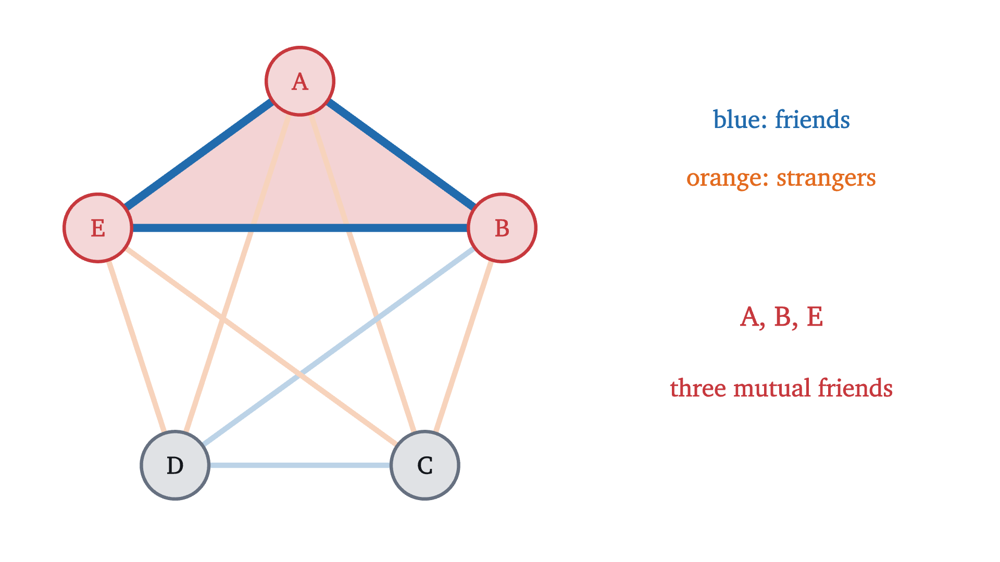
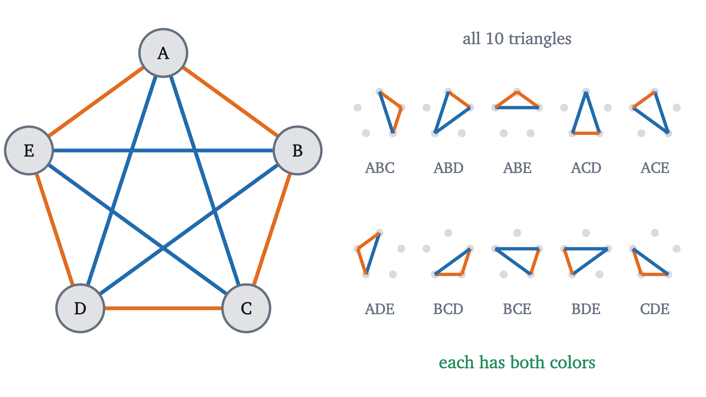
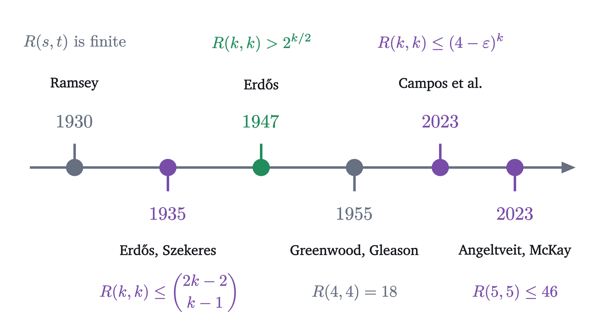
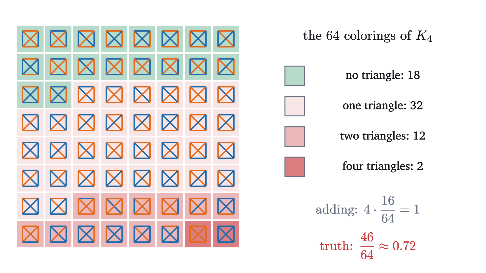
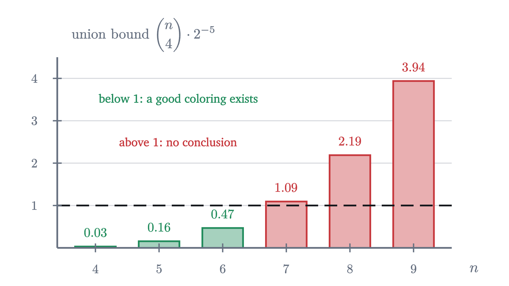

The probabilistic method: Ramsey numbers by coin flips
Six party guests always include three mutual friends or three mutual strangers. For larger parties, the best lower bounds come from coloring at random.
AssumesThe pigeonhole principle: obvious, and surprisingly strongPermutations and combinations: counting without listingWhat probability means: counting equally likely outcomes
You are hosting a party with five guests. You hope for some level of familiarity, but also some level of strangeness between the guests. Specifically, you hope that no three guests all know each other beforehand, and that no three are all mutual strangers. Is there a guest list like that? And if there is one for five guests, is there one for six?
The first question yields to a few minutes of trial and error. The second is a different kind of problem, because among six people there are $2^{15} = 32{,}768$ ways to decide who knows whom, and for bigger versions of the question the count outruns every computer. We will settle both by proof. Then we turn to the bigger versions, where the best known way to produce a good arrangement is to flip a coin for every pair and prove that the coins cannot fail every time.
Graphs and colorings
To make the problem mathematical, represent it as a graph. Each person is a vertex, and a line is drawn between every pair. Color the line blue if the two people are friends and orange if they are strangers. Below is a first attempt for five guests, colored without much thought. It fails: $A$, $B$ and $E$ all know each other.

The number $\binom{n}{2} = \frac{n(n-1)}{2}$ counts the ways to choose 2 vertices from $n$. A blue triangle is three mutual friends and an orange triangle is three mutual strangers, so the host wants a 2-coloring of $K_5$ with no monochromatic triangle. I will call such a coloring valid.
Building up: small cases
It’s instructive to start with smaller examples. With three people the arrangement is not difficult to construct. Color $AB$ blue, then $AC$ blue, and we’re forced to color $BC$ orange to avoid a blue triangle. For four, we can reuse that coloring and try to color the three new edges.
Pause and try
Find a valid coloring of $K_5$ before reading on. A hint from the failed attempt above: $B$ had three blue edges there. Try to give every vertex two edges of each color.
Show answerHide answer
Place the five vertices at the corners of a regular pentagon. Color the five sides orange and the five diagonals blue. Every vertex then has two orange and two blue edges, and the check that no triangle is monochromatic is the proof below.
For five, extending the four-guest coloring by hand works, but the pentagon coloring is more regular, which lets us check all ten triangles with one argument.

So the answer to the party question is yes: with five guests a valid arrangement exists.
The wall at six
It is natural to try to keep going. Based on the past it might seem that there is an inductive argument: take a valid coloring on $n - 1$ vertices and extend it to $n$. But once we get to $n = 6$, no matter what you try, you can’t avoid a monochromatic triangle. Here are 24 colorings of $K_6$ chosen by coin flips. A search finds a monochromatic triangle in every one.
Twenty-four failures out of 32,768 colorings are evidence and not a proof. Checking the rest by machine would settle six guests and teach us nothing about seven, so let us look for a reason. The earlier hint pointed at it: trouble started at a vertex with three edges of one color.
Pause and try
In a 2-coloring of $K_6$, pick one vertex $F$. Five edges leave it. At least how many of them must share a color, and why?
Show answerHide answer
Three. If each color appeared at most twice, $F$ would have at most 4 edges. This is the pigeonhole principle: 5 edges in 2 colors put at least $\lceil 5/2 \rceil = 3$ in one color.
The proof used nothing about the coloring except that $F$ has five edges. With five guests a vertex has four edges, which can split two and two, and that is the room the pentagon uses.
Ramsey numbers
Three mutual friends or three mutual strangers are forced at six guests and not at five. The same question can be asked with other clique sizes.
Read the definition against what we did. To show $R(s,t) \le n$ you must argue about every coloring of $K_n$, as in the proof for six. To show $R(s,t) > n$ it is enough to exhibit one coloring of $K_n$ with neither clique, as the pentagon does for $n = 5$. Together the two theorems above say
If every coloring of $K_n$ contains one of the cliques, so does every coloring of a larger $K_m$, because $n$ of its vertices already carry a coloring of $K_n$. So $R(s,t)$ is a threshold: below it some coloring avoids both cliques, and from it onward none does.
A priori these numbers aren’t even well defined, since nothing so far says that any $n$ at all works for, say, $s = t = 10$. In 1930 Frank Ramsey proved that such an $n$ always exists. A few years later, Erdős and Szekeres found a short argument that also gives an explicit upper bound. It is the proof for six guests with the numbers replaced by letters.

Upper bounds, then, come from an argument about every coloring. Lower bounds need colorings that avoid large monochromatic cliques, and for a while those came from increasingly clever constructions. The simple ones grow only like a power of $k$ (see Problem 4). Then in 1947 Erdős published an argument only a few lines long that gives a lower bound growing exponentially in $k$, and it constructs nothing.
A random coloring
The core idea behind Erdős’s method is probabilistic instead of constructive. We start with a completely random coloring and ask for the probability that it contains a monochromatic clique of size $k$. If that probability is less than 1, then some coloring contains none.
Try it first where everything can be counted: triangles in $K_4$. Flip a fair coin for each of the 6 edges. The sample space is the set of $2^6 = 64$ colorings, all equally likely. A particular triangle is monochromatic when its 3 edges are all blue or all orange, which fixes those edges in one of 2 ways and leaves the other 3 edges free. That is $2 \cdot 2^3 = 16$ colorings, a probability of $\frac{16}{64} = \frac14$.
Pause and try
$K_4$ has four triangles, and each is monochromatic with probability $\frac14$. Is the probability that at least one of them is monochromatic equal to $4 \cdot \frac14 = 1$? Decide by finding one coloring of $K_4$ with no monochromatic triangle.
Show answerHide answer
It is less than 1: the valid coloring of four guests found earlier is one of the 64 outcomes. Adding the four probabilities counts a coloring once for every monochromatic triangle it has, so colorings with several are counted several times. The figure below does the exact count.

The exact probability is $\frac{46}{64} \approx 0.72$. Computing it took a full enumeration, which is out of the question for large graphs. Adding the individual probabilities is cheap, and the picture shows that it can only overshoot.
Equality holds exactly when no outcome of positive probability lies in two of the events. For $K_4$ the bound gives $1$, which is true and useless. The bound is useful when the sum comes out below 1.
Pause and try
For which $n$ does the same calculation show that $K_n$ has a 2-coloring with no monochromatic clique of size 4? You need $\binom{n}{4} \cdot \frac{1}{32} < 1$.
Show answerHide answer
We need $\binom{n}{4} < 32$. Since $\binom{6}{4} = 15$ and $\binom{7}{4} = 35$, the calculation works up to $n = 6$ and says nothing from $n = 7$ on.

Since $R(4,4) = 18$, the result $R(4,4) > 6$ is weak. The strength of the method is in how it grows with $k$.
The lower bound
Fix $k$ and color $K_n$ at random. There are $\binom{n}{k}$ sets of $k$ vertices, and each is monochromatic with probability $2 \cdot 2^{-\binom{k}{2}}$, where the factor of 2 accounts for the two possible colors. The union bound gives
If we choose $n$ so that the right side is less than 1, then some coloring of $K_n$ has no monochromatic clique of size $k$, and therefore $R(k,k) > n$. What remains is to find out how large $n$ can be.
You might object that probability did no real work, and for this proof you would be right. Multiply everything by the number of colorings, and the argument says that the colorings with a monochromatic clique of size $k$, even counted with repetition, number fewer than the total, so some coloring is left over. The probabilistic language is bookkeeping for that count, and it stays manageable in later arguments where the coins are unfair.
Hay in a haystack
The proof says more than that a good coloring exists. For $k = 20$ we have $n = 2^{10} = 1024$, and the failure probability is below $\frac{2^{11}}{20!} \approx 8 \times 10^{-16}$. Almost every coloring of $K_{1024}$ has no monochromatic clique of size 20. Yet the proof hands us none of them, and to verify a candidate one would have to examine $\binom{1024}{20}$ sets of vertices, which is more than $10^{41}$. As far as I know, nobody has found an explicit, efficiently computable rule for coloring $K_n$ that provably avoids monochromatic cliques of size $k$ with $n$ growing like $c^k$ for some constant $c > 1$; finding one is a well-known open problem. A completely random method with no intelligence at all gives a better lower bound than the thought-out constructions. It’s as if we are unable to find hay in a haystack.
The result is an existence statement with no construction behind it. And the two bounds in the key statement are far apart: one grows like $1.414^k$ and the other like $4^k$. The base $\sqrt2$ of the lower bound has not been improved since 1947. In 2023 Campos, Griffiths, Morris and Sahasrabudhe announced the first improvement in the base of the upper bound, to $(4 - \varepsilon)^k$ for a small constant $\varepsilon > 0$.
The probabilistic method has since become a standard technique in combinatorics for proving the existence of objects that no one knows how to construct explicitly. The reusable step is to replace “find one” by “show that a random one works with positive probability”.
To illustrate how challenging the problem remains despite its simple statement, Joel Spencer recounts the following anecdote: “Erdős asks us to imagine an alien force, vastly more powerful than us, landing on Earth and demanding the value of $R(5, 5)$ or they will destroy our planet. In that case, he claims, we should marshal all our computers and all our mathematicians and attempt to find the value. But suppose, instead, that they ask for $R(6, 6)$. In that case, he believes, we should attempt to destroy the aliens.” For $R(6,6)$ the known bounds are far apart: it is at least 102, and the best proved upper bound is 160.
Check yourself
A random 2-coloring of $K_5$ has 10 triangles, each monochromatic with probability $\frac14$, so the union bound on “some triangle is monochromatic” is $2.5$. What follows?
Problems
Problems 1 and 2 repeat the lesson’s moves, 3 to 5 combine them, and 6 and 7 go further.
Problem 1
Use the theorem of Erdős and Szekeres to show that $R(3,4) \le 10$ and $R(4,4) \le 20$. Check both against the binomial bound.
Show solutionHide solution
By the recurrence and the base case $R(2,4) = 4$, we get $R(3,4) \le R(2,4) + R(3,3) = 4 + 6 = 10$. Exchanging the two colors in the definition shows $R(4,3) = R(3,4)$, so $R(4,4) \le R(3,4) + R(4,3) \le 10 + 10 = 20$. The binomial bound gives $\binom{3+4-2}{2} = \binom{5}{2} = 10$ and $\binom{6}{3} = 20$, the same numbers. (The true values are $R(3,4) = 9$ and $R(4,4) = 18$.)
Problem 2
Each edge of $K_n$ is colored blue or orange by a fair coin flip. (a) Find the expected number of monochromatic triangles, and evaluate it for $n = 6$. (b) For $n = 5$ the expected number is $2.5$, yet the pentagon coloring has none. Why is there no contradiction?
Show solutionHide solution
(a) For each of the $\binom{n}{3}$ triangles $T$, let $X_T$ be 1 if $T$ is monochromatic and 0 otherwise. Its expected value is $P(T \text{ is monochromatic}) = 2 \cdot 2^{-3} = \frac14$. The number of monochromatic triangles is the sum of the $X_T$, and the expected value of a sum is the sum of the expected values, whether or not the terms are independent. So the expected number is $\frac14\binom{n}{3}$. For $n = 6$ it is $\frac{20}{4} = 5$. (b) An expected value is an average over all colorings. An average of 2.5 requires some colorings with at most 2 monochromatic triangles and some with at least 3, and puts no other restriction on the smallest value, which can be 0. The number 2.5 is also the union bound: the sum of the probabilities of the events is the expected number of events that occur.
Problem 3
Now use three colors. Show that the edges of $K_{10}$ can be colored red, green and blue so that no four vertices have all six of their edges the same color.
Show solutionHide solution
Color each edge independently, with each color having probability $\frac13$. All $3^{45}$ colorings are equally likely. A given set of four vertices has 6 edges, and they all agree in 3 of the $3^6$ ways to color them, so the set is monochromatic with probability $3 \cdot 3^{-6} = \frac{1}{243}$. There are $\binom{10}{4} = 210$ such sets. By the union bound the probability that some set of four is monochromatic is at most $\frac{210}{243} < 1$. So with positive probability no set is, and a coloring of the required kind exists. For $K_{11}$ the same sum is $\frac{330}{243} > 1$ and this argument gives nothing.
Problem 4
Split $(k-1)^2$ vertices into $k - 1$ groups of $k - 1$ vertices each. Color an edge blue if its ends are in the same group and orange otherwise. Show that this proves $R(k,k) > (k-1)^2$, and compare with $2^{k/2}$ for $k = 20$ and $k = 40$.
Show solutionHide solution
In a blue clique every two vertices are in the same group, so the whole clique lies in one group and has at most $k - 1$ vertices. In an orange clique every two vertices are in different groups, so it has at most one vertex per group, again at most $k - 1$. So this coloring of $K_{(k-1)^2}$ has no monochromatic clique of size $k$, and $R(k,k) > (k-1)^2$. For $k = 20$ that is $361$ against $2^{10} = 1024$. For $k = 40$ it is $1521$ against $2^{20} = 1{,}048{,}576$. The construction grows like $k^2$ and the random bound grows exponentially.
Problem 5
For triangles in $K_5$ the union bound is $2.5$. Find the exact probability that a random 2-coloring of $K_5$ has a monochromatic triangle, by showing that exactly 12 of the $2^{10} = 1024$ colorings are valid.
Show solutionHide solution
Take a valid coloring. If some vertex $v$ had three edges of one color, to $x$, $y$ and $z$, the argument for $K_6$ would apply word for word: an edge among $x, y, z$ of that color closes a triangle with $v$, and otherwise $x, y, z$ is a triangle of the other color. So every vertex has at most two edges of each color, and since it has four edges, exactly two blue and two orange. Now follow the blue edges. Each vertex lies on exactly two of them, so the blue edges form closed loops with no vertex shared between loops. A loop has at least 3 vertices and there are 5 vertices, so there is a single loop through all five. Conversely, if the blue edges form a loop through all five vertices, draw the vertices around a pentagon in the order of the loop. This is the pentagon coloring with the colors exchanged, and it is valid by the gap argument. So the valid colorings correspond to the loops through five labeled vertices. There are $5! = 120$ ways to list the vertices in order, and each loop is listed $10$ times (5 starting points, 2 directions), which makes $12$ loops. The probability of a monochromatic triangle is $\frac{1024 - 12}{1024} = \frac{1012}{1024} \approx 0.988$. The union bound of 2.5 is correct and far from tight, because a typical coloring has several monochromatic triangles and the sum counts it once for each.
Problem 6
Every edge of $K_{17}$ is colored red, green or blue. Prove that there is a monochromatic triangle.
Show solutionHide solution
Fix a vertex $v$. It has 16 edges in 3 colors, so by the pigeonhole principle at least $\lceil 16/3 \rceil = 6$ of them share a color, say red, and they lead to six vertices $x_1, \dots, x_6$. If some edge $x_i x_j$ is red, then $v, x_i, x_j$ is a red triangle. Otherwise every edge among the six vertices is green or blue, which is a 2-coloring of $K_6$, and by the theorem that $R(3,3) \le 6$ it contains a green or a blue triangle. (Greenwood and Gleason showed in 1955 that 17 cannot be lowered.)
Problem 7
Show that every 2-coloring of $K_6$ contains at least two monochromatic triangles.
Show solutionHide solution
Call two edges that meet at a vertex a mixed corner if they have different colors. A triangle that is not monochromatic has two edges of one color and one of the other, so exactly two of its three corners are mixed: the two at the ends of the odd edge. A monochromatic triangle has no mixed corner. Now count mixed corners vertex by vertex. A vertex with $b$ blue edges and $5 - b$ orange edges is the meeting point of $b(5 - b)$ mixed corners, and $b(5-b)$ takes the values $0, 4, 6, 6, 4, 0$ for $b = 0, \dots, 5$, so it is at most 6. Over the six vertices there are at most 36 mixed corners. Every triangle that is not monochromatic uses up two of them, so at most 18 triangles are not monochromatic. $K_6$ has $\binom{6}{3} = 20$ triangles, so at least 2 are monochromatic.